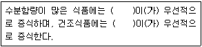
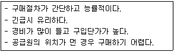

조리산업기사(공통) (2015-03-08 기출문제)
1과목: 식품위생 및 관련법규
1. 식품위생법상 조리사로서 영업에 종사할 수 있는 경우는?
- 조리사 면허의 취소처분을 받고 그 취소된 날부터 1년이 지나지 아니한 자
- 세균성이질환자
- 화농성질환자
- B형간염환자
(정답률: 93%)

2. 살균 효과가 가장 강한 알코올 농도는?
- 60~65%
- 70~75%
- 80~85%
- 90~95%
(정답률: 81%)
3. 식품위생법상 식품접객업의 영업을 하려는 자의 경우 몇 시간의 식품위생교육을 받아야 하는가?
- 2시간
- 4시간
- 6시간
- 8시간
(정답률: 92%)
4. 유해 인공 감미료는?
- 삭카린나트륨(sodium saccharin)
- 사이클라메이트(cyclamate)
- 아세설팜칼륨(acesulfame-K)
- 아스파탐(aspartame)
(정답률: 77%)
5. 세균성 식중독과 경구감염병의 차이를 설명한 내용으로 틀린 것은?
- 경구감염병은 세균성 식중독에 비해 병원균의 독력이 강하다.
- 경구감염병은 세균성 식중독에 비해 면역성이 없는 경우가 많다.
- 경구감염병은 세균성 식중독에 비해 감염 균량이 적어도 발병하는 경우가 많다.
- 경구감염병은 세균성 식중독에 비해 병원균의 잠복기가 일반적으로 길다.
(정답률: 50%)
6. 콜린에스테라아제(cholinesterase) 효소작용을 저해하는 농약은?
- 유기인제
- 유기불소제
- 유기황제
- 유기염소제
(정답률: 71%)
7. 자외선 살균이 가장 효과적인 파장은?
- 150~200 nm
- 200~220 nm
- 250~260 nm
- 350~360 nm
(정답률: 75%)
8. 일반적으로 식품 1g 당 초기 부패 판정에 해당하는 세균수는?
- 101~102
- 103~104
- 104~105
- 106~108
(정답률: 68%)
9. 세균성 식중독과 원인 세균이 잘못 연결된 것은?
- 살모넬라 식중독 - Salmonella typhimurium
- 웰치균 식중독 - Clostridium perfringens
- 장염비브리오 식중독 - Vibrio parahaemolyticus
- 포도상구균 식중독 - Staphylococcus saprophyticus
(정답률: 78%)
10. 식품위생법상 단란주점영업의 시설기준으로 틀린 것은?
- 객실로 설치할 수 있는 면적은 객석면적의 2분의 1을 초과할 수 없다.
- 객실에는 잠금장치를 설치할 수 없다.
- 객실을 설치하는 경우 통로형태 또는 복도형태로 설비하여야 한다.
- 소방법령이 정하는 소방시설 등 및 내부 피난통로 그 밖의 안전시설을 갖추어야 한다.
(정답률: 62%)
11. Asbergillus 속 곰팡이가 생성하는 곰팡이 독은?
- 시트리닌 (citrinin)
- 아플라톡신 (aflatoxin)
- 에르고톡신 (ergotoxin)
- 베네루핀 (venerupin)
(정답률: 71%)
12. 부패를 판정하는 시험 방법 중 다음 한 가지 방법만으로 식품의 신선도를 평가할 수 없는 것은?
- 관능시험
- 생균수 측정
- 휘발성 염기질소 측정
- pH 측정
(정답률: 66%)
13. ( ) 안에 들어갈 미생물이 순서대로 맞는 것은?

- 세균, 효모
- 효모, 공팡이
- 곰팡이, 방선균
- 세균, 곰팡이
(정답률: 67%)
14. 소독약의 살균력을 나타내는 지표로 활용되는 것은?
- 역성비누
- 석탄산
- 과산화수소
- 크레졸
(정답률: 95%)
15. 황색 포도상구균에 의한 식중독 예방대책 중 가장 옳은 것은?
- 통조림의 살균을 철저히 해야 한다
- 어패류를 저온에서 보존하여 가열 후 섭취해야 한다.
- 쥐나 곤충의 접근을 막아야 한다.
- 화농성 질환자의 식품취급을 금지해야 한다.
(정답률: 87%)
16. 단백질 식품의 변질과 부패를 일으키는 분해과정이 아닌 것은?
- 초산 반응
- 탈탄산 반응
- 가수분해 반응
- 탈아미노 반응
(정답률: 81%)
17. 작용 강도가 큰 순서대로 나열된 것은?
- 멸균 ＞ 정균 ＞ 살균
- 멸균 ＞ 살균 ＞ 정균
- 정균 ＞ 멸균 ＞ 살균
- 살균 ＞ 정균 ＞ 멸균
(정답률: 92%)
18. 위생분야 종사자 등의 건강진단 규칙상 조리사들이 받아야 할 건강진단 항목과 그 횟수가 맞게 연결된 것은?
- 장티푸스 - 1회 / 1년
- 폐결핵 - 1회 / 2년
- 감염성 피부질환 - 1회 / 6개월
- 후천성면역결핍증 - 1회 / 3년
(정답률: 90%)
19. 알레르기(allergy)성 식중독의 원인균과 원인물질이 옳게 짝지어진 것은?
- Pseudomonas syncyanea - histamine
- Pseudomonas syncyanea - histidine
- Morganella morganii - histamine
- Morganella morganii - histidine
(정답률: 60%)
20. 숯불구이와 훈제육 등의 열분해물에서 생성되며 발암성 물질로 알려진 다환방향족 탄화수소는?
- 벤조피렌(benzo(α) pyrene)
- 니트로사민(n-nitrosamine)
- 포름알데히드(formaldehyde)
- 헤테로고리아민류 (heterocyclic amine)
(정답률: 95%)
2과목: 식품학
21. 과일에 대한 설명으로 틀린 것은?
- 파인애플이나 키위에는 단백질 분해효소가 많이 들어있다.
- 레몬은 생선 비린내를 없애주고 생선의 지방을 응고시켜 조직감을 좋게 한다.
- 포도주 등의 과실주를 증류하여 만든 것이 브랜디이다.
- 사과는 펙틴과 산이 많아 잼을 만들기에 적당하다.
(정답률: 60%)
22. 안토시안계 색소를 주로 함유 하는 것은?
- 수박
- 고추
- 토마토
- 딸기
(정답률: 54%)
23. 무즙에 당근즙을 가하면 비타민 C의 파괴가 현저하게 일어나는 이유는?
- 당근에 아스코르비나제(ascorbinase)가 많기 때문
- 당근에 산화제 성분이 많이 들어있기 때문
- 당근에 프로비타민(provitamin) A가 들어있기 때문
- 무에 메르캅탄(mercaptane)이 들어 있기 때문
(정답률: 59%)
24. 유지의 발연점에 대한 설명 중 맞는 것은?
- 불순물이 많을수록 높아진다.
- 유리지방산이 않을수록 낮아진다.
- 용기의 표면적이 작을수록 낮아진다.
- 오래된 기름일수록 높아진다.
(정답률: 66%)
25. 식품의 수분활성도에 대한 설명으로 가장 옳은 것은?
- 수분활성도는 식품의 수분함량과 동일하다.
- 수분활성도에 따라 미생물의 생육이 달라진다.
- 식품의 수분활성도는 1보다 크다.
- 곰팡이의 생육은 수분활성도 0.65 이하에서 왕성하다.
(정답률: 77%)
26. 문어, 오징어의 감칠맛 성분이며, 항황아미노산의 일종으로 두뇌발달 활성을 나타내는 물질은?
- 타우린(taurine)
- CPP(Casein phosphopeptide)
- 키토산(chitosan)
- DHA
(정답률: 79%)
27. 생선요리의 어취를 감소시키기 위해 사용되는 식품과 원인물질이 틀린 것은?
- 술 - 알코올(alcohol)
- 고추냉이 - 머스타드 오일 (mustard oil)
- 우유 - 델타 락톤(δ-lactone)
- 무 - 쇼가올(shogaol)
(정답률: 71%)
28. 아미노산 중 광학적으로 활성이 없는 것은?
- 페닐알라닌(phenylalanine)
- 발린(valine)
- 라이신(lysine)
- 글리신(glycine)
(정답률: 27%)
29. 펙틴(pectin) 물질의 특성이 아닌 것은?
- 기본단위는 갈락투론산(galacturonic acid)이다.
- 물에서 교질용액을 형성하며 점도가 크다.
- protopectin(프로토펙틴), pectic acid(펙트산), pectinic acid(펙틴산) 등으로 구분된다.
- 조리과정에서 불용성의 펙틴(pectin)이 열에 의해 수용성의 프로토펙틴(protopectin)으로 분해되어 채소가 연해진다.
(정답률: 50%)
30. 전분에 대한 설명으로 틀린 것은?
- 포도당의 중합체이다.
- 구조상 아밀로즈(amylose)와 아밀로펙틴 (amylopectin)으로 나눈다.
- 결정구조(micelle) 때문에 X선이 잘 통과한다.
- 가수분해되어 다양한 호정(dextrin)이 생성된다.
(정답률: 66%)
31. 마이야르반응(Maillard reaction)에 대한 설명으로 틀린 것은?
- 식품의 풍미가 생성된다.
- 아미노산과 당류사이에 일어나는 반응이다.
- 반응에 의하여 식품의 영양가가 높아진다.
- 갈색화되는 반응이다.
(정답률: 77%)
32. 콩에 함유된 노란색 성분으로 골다공증 예방에 효과가 있는 것은?
- 사포닌(saponin)
- 카로틴(carotene)
- 토코페롤(tocopherol)
- 이소플라본(iscflavone)
(정답률: 55%)
33. 새우, 게 등의 겉껍질을 구성하는 키틴(chitin)의 단위 성분은?
- N-아세틸갈락토사민(N-acetyl galactosamine)
- N-아세틸글루코사민(N-acetyl glucosamine)
- 글루쿠론산(glucuronic acid)
- 갈락투론산(galacturonic acid)
(정답률: 47%)
34. 등전점에서 일어나는 변화로 옳은 것은?
- 용해도의 증가
- 삼투압의 감소
- 기포력의 감소
- 점도의 증가
(정답률: 39%)
35. 신선한 청녹색의 바닷가재로 찜을 하였더니 형성된 적색색소는?
- 아스타잔틴(astaxanthin)
- 안토시아닌(anthocyanin)
- 아스타신(astacin)
- 안토잔틴(anthoxanthin)
(정답률: 50%)
36. 비타민 A 기능을 갖는 것은?
- 클로로필(chlcrophyll)
- 카로틴(carotene)
- 메티오닌 (methionine)
- 리놀레산(linoleic acid)
(정답률: 75%)
37. 감칠맛을 내는 아미노산은?
- 글루탐산(glutamic acid)
- 트립토판(tryptophnan)
- 아르기닌(arginine)
- 라이신(lysine)
(정답률: 89%)
38. 우뭇가사리의 성분으로 L-갈락토오스(L-galactose)를 주체로 하는 복합다당류는?
- 덱스트란(dextran)
- 한천(agar)
- 만난(mannan)
- 알긴산(alginic acid)
(정답률: 80%)
39. 유지의 화학적 특성에 대한 설명 총 옳은 것은?
- 요오드가(iodine value)는 구성지방산의 불포화도에 대한 지표로 유지가 산패되면 낮아진다.
- 과산화물가(peroxide value)는 유지 산패의 지표로 산패가 진행됨에 따라 계속 증가한다.
- 유지를 구성하는 고급지방산의 상대적 비율이 높아지면 비누화가(saponification value)가 높아진다.
- 마가린과 버터를 구별하기위해 폴렌스케가(Polerske value)를 주로 사용한다.
(정답률: 29%)
40. 날콩의 독성 물질로 동물의 적혈구를 응집시키는 것은?
- 안티트립신(antitrypsin)
- 사포닌(saponin)
- 헤마글루티닌(hemaggolutinin)
- 아플라톡신(aflatoxin)
(정답률: 59%)
3과목: 조리이론 및 급식관리
41. 육류를 일정한 두께로 썰 수 있는 기기는?
- 초퍼(chopper)
- 슬라이서(slicer)
- 필러(peeler)
- 커터(cutter)
(정답률: 85%)
42. 조리 시 설탕의 용도에 대한 설명으로 틀린 것은?
- 식품의 색과 풍미를 좋게 한다.
- 식품의 보존성을 높여준다.
- 전분의 노화를 방지한다.
- 지방산의 산화를 촉진한다.
(정답률: 74%)
43. 건조저장실의 조건으로 옳은 것은?
- 온도는 10~24°C가 적당하다.
- 습도는 30~40%가 적당하다.
- 창문은 환기가 가능하도록 커야 한며, 망의 간격은 클수록 좋다.
- 건조를 위해 직사광선이 충분해야 한다.
(정답률: 52%)
44. 생선조리 시 파, 마늘을 사용할 때 어취를 약화시키는 성분은?
- 황화아릴류
- 암모니아
- 트리메틸아민
- 히스타민
(정답률: 62%)
45. 폐기량이 있는 식품의 발주량 계산법으로 옳은 것은?
- {1인 사용량 ÷ (100-폐기율)} x 100 x 급식인원수
- {(100-폐기율) ÷ 1인 사용량} x 100 x 급식인원수
- 1인 사용량 x 급식인원수
- 1인 사용량 ÷ 급식인원수
(정답률: 65%)
46. 식품의 계량방법 중 틀린 것은?
- 마가린은 냉장온도의 것을 계량기구에 담아 계량한다.
- 우유는 계량컴의 눈금까지 천천히 부어 계량한다.
- 황설탕은 계량기구의 형태를 유지할 수 있을 정도로 가득 채워 계량한다.
- 밀가루는 체에 쳐서 누르거나 흔들지 말고 수북하게 담아 직선 spatula로 깎아 계량한다.
(정답률: 81%)
47. 우엉을 삶을 때 가끔 청색으로 변하는데 그 이유로 맞는 것은?
- 폴리페놀 성분이 안토잔틴계 색소와 반응하여 변색된 것이다.
- 유기산이 안토잔틴계 색소와 반응하여 변색된 것이다.
- 알칼리성 무기질인 Ca, Na, Mg 등이 안토시아닌계 색소와 반응하여 변색된 것이다.
- 산성 무기질인 S, P 등이 안토시아닌계 색소와 반응하여 변색된 것이다.
(정답률: 65%)
48. 생선 조리에 대한 설명 중 틀린 것은?
- 생선으로 찌개나 탕을 끓일 때는 국물이 끓은 다음에 생선을 넣어야 국물이 맑고 생선살도 풀어지지 않는다.
- 붉은 살 생선은 살이 무르기 때문에 양념장이 끓기 시작할 때 넣어 단시간 가열한다.
- 생선을 구울 때는 소금에 절였다가 구우면 생선단백질이 변성 및 응고되어 모양이 부서지지 않는다.
- 생선찌개의 된장이나 고추장 양념은 흡착력과 점성이 강하여 다른 조미료의 침투를 방해하므로 다른 조미료를 먼저 첨가한 후에 사용하도록 한다.
(정답률: 50%)
49. 다음 중 원가계산의 원칙이 아닌 것은?
- 소비기준의 원칙
- 발생기준의 원칙
- 진실성의 원칙
- 상호관리의 원칙
(정답률: 31%)
50. 두부를 부드럽게 조리하는 방법으로 틀린 것은?
- 두부를 1%의 소금물에 담가 두었다가 조리한다.
- 물에 먼저 두부를 넣고 센불에서 끓인 후 0.5~1%의 소금으로 간을 한다.
- 된장찌개를 조리할 때 다른 재료를 넣고 간을 하여 익은 후 두부를 넣고 80°C 부근에서 단시간 끓인다.
- 조리수나 그릇을 통해 철이나 알루미늄이온이 두부와 접촉하지 않도록 한다.
(정답률: 69%)
51. 전분의 조리에 대한 설명으로 옳은 것은?
- 전분을 수분과 함께 가열하는 것이 호정화이다.
- 호화된 전분은 결정성이 나타난다.
- 조리하면 α형 전분이 β형 전분으로 된다.
- 호화되면 효소의 작용을 받기가 쉽다.
(정답률: 39%)
52. 물가상승시 식품비를 최대화하고 재고가치를 최소화하고 싶을 때 사용되는 재고액의 평가방법은?
- 최종구매가법
- LIFO(후입선출법)
- FIFO(선입선출법)
- 총평균법
(정답률: 65%)
53. 다음 특징을 가진 구매방법은?

- 정기구매
- 수시구매
- 분산구매
- 공동구매
(정답률: 43%)
54. 한국음식 양념 중 향신료에 해당 되는 것은?
- 된장, 식초
- 겨자, 후추
- 소금, 간장
- 설탕, 고추장
(정답률: 84%)
55. 멸치, 육류, 가쓰오부시의 감칠맛 성분은?
- MSG
- IMP
- MGS
- GMP
(정답률: 63%)
56. 열원에서 식품으로 열이 이동하는 방법이 아닌 것은?
- 전도
- 대류
- 초단파
- 복사
(정답률: 78%)
57. 다음 식품 중 저장 온도가 높은 것끼리 묶인 것은?
- 쇠고기, 돼지고기
- 치즈, 햄
- 사과, 수박
- 바나나, 레몬
(정답률: 75%)
58. 조리원리에 대한 설명으로 들린 것은?
- 삼투는 반투막 사이로 용매는 통과시키지 않고 용질을 통과시켜 농도 평형을 이루려는 현상이다.
- 침투는 분자량이 작을수록 빨리 침투하므로 설탕을 먼저 넣고 소금을 나중에 넣는 것이 좋다.
- 용해도 성질에 따라 초간장 제조시 설탕과 식초를 섞은 후 간장을 넣는다.
- 교질용액의 입자는 가라앉지 않을 정도의 크기로 용해되거나 침전되지 않고 분산 상태로 존재한다.
(정답률: 40%)
59. 400g에 10000원하는 불고기를 구입하여 1인당 100g씩 급식할 경우 1인당 식품원가는 얼마이며, 1인당 8000원에 판매하고 있다면 불고기의 식자재비율은 약 몇%인가?
- 2500원, 31.2%
- 1500원, 32.0%
- 2000원, 35.5%
- 3000원, 30.5%
(정답률: 66%)
60. 시금치나물의 1인분량은 60g, 폐기율은 7%, 식수인원이 600명인 경우 폐기율을 고려한 시금치의 발주량은 약 얼마인가?
- 34 kg
- 36 kg
- 39 kg
- 41 kg
(정답률: 60%)
4과목: 공중보건학
61. 작업환경조건과 질병과의 연결로 맞는 것은?
- 잠수작업 - 저산소증
- 중기계공업 - 소음성장애
- 채석장 - 울열증
- 조리장 - 안구진탕증
(정답률: 57%)
62. 소음이 인체에 주는 피해가 아닌 것은?
- 불안, 노이로제
- 혈압저하
- 위장기능 감퇴
- 청력장애
(정답률: 71%)
63. 모기 매개 기생충으로만 묶여진 것은?
- 말라리아원충, 요충
- 유구조충, 무구조충
- 일본뇌염, 황열
- 뎅기열, 십이지장충
(정답률: 75%)
64. 폴리오(poliomyelitis)에 관한 설명 중 옳은 것은?
- 말초신경계에 손상을 일으킨다.
- 일시 마비를 일으키는 급성 감염병이다.
- 우리나라 제3군 감염병이다.
- 병원소는 환자 및 불현성 감염자이다.
(정답률: 42%)
65. 다수인이 밀집한 밀폐된 실내에서 올 수 있는 대표적인 현상은?
- 산소중독증
- 질소중독증
- 군집독
- 저산소증
(정답률: 83%)
66. 망막을 자극하여 물체의 식별과 색채를 구별할 수 있도록 하는 것은?
- 감마선
- 자외선
- 가시광선
- 적외선
(정답률: 80%)
67. 자외선이 인체에 미치는 긍정적 작용이 아닌 것은?
- 살균작용
- 구루병 예방
- 신진대사 촉진
- 피부색소 침착
(정답률: 73%)
68. 다음 중 음압의 단위는?
- N/m2
- kg/m3
- m/s
- m/s2
(정답률: 72%)
69. 부영양화된 호소(湖沼) 나타나는 수질변화 현상이 아닌 것은?
- 용존산소가 증가한다.
- 수화현상을 초래한다.
- 질산염이나 인산염이 증가한다.
- 투명도가 감소한다.
(정답률: 68%)
70. 결핵유병률이 1.0%일 때의 의미로 옳은 것은?
- 결핵에 걸려있는 환자수가 1.0%이다.
- 결핵의 새로운 환자수가 1.0%이다.
- 결핵의 BCG 접종률이 1.0%이다.
- 투베르쿨린 반응 양성자가 1.0%이다.
(정답률: 59%)
71. 물의 자정작용과 가장 거리가 먼 것은?
- 산화작용
- 식균작용
- 희석작용
- 침식작용
(정답률: 30%)
72. 살균력이 강하여 수술실, 무균실, 제약실 등의 실내공기 소독에 이용되는 방법은?
- 일광소독법
- 고압증기멸균법
- 고온멸균법
- 자외선멸균법
(정답률: 72%)
73. 상수의 수질검사 중 대장균을 지표균으로 검사하는 이유는?
- 다른 병원성 세균의 존재를 추측할 수 있기 때문
- 병원성이 있어 위험하기 때문
- 검출방법이 독특하기 때문
- 저항성이 병원성세균보다 약하기 때문
(정답률: 65%)
74. 컴퓨터의 스크린에서 방사되는 해로운 전자기파에 의해 두통, 시각장애 등의 증세가 나타나는 것은?
- 비소중독
- 잠함병
- VDT 증후군
- 참호족
(정답률: 78%)
75. 구충ㆍ구서의 가장 근본적인 방법은?
- 유충구제
- 성충구제
- 살충제 분무
- 발생원 및 서식지 제거
(정답률: 84%)
76. 정기 예방접종 대상 질환에 속하지 않는 것은?
- 유행성이하선염
- 말라리아
- 백일해
- 폴리오
(정답률: 53%)
77. 감염병의 예방을 위하여 생균백신을 이용하는 질병들로 바르게 짝지어진 것은?
- 장티푸스, 디프테리아
- 백일해, 폴리오
- 탄저, 광견병
- 콜레라, 결핵
(정답률: 25%)
78. 질병 발생의 3대 요소는?
- 숙주, 환경, 병인
- 유전, 소질, 환경
- 병인, 환경, 소질
- 병인, 감수성, 유전
(정답률: 87%)
79. 만성감염병 질환은?
- 세균성이질
- 디프테리아
- 결핵
- 콜레라
(정답률: 56%)
80. 일몰 후 지열복사로 지표면의 공기층이 먼저 냉각되어 형성되는 기온역전은?
- 침강성 역전
- 방사성 역전
- 전선성 역전
- 확산성 역전
(정답률: 45%)